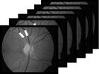

两个⾯向中国的⾼端诊断⼯具
1. 介绍
诊断在医学上⼀向起关键的作⽤：更精确的诊断可以使治疗更有效。下⾯展⽰的两种诊断⽅法在敏感度以 及早期疾病勘查能⼒上有它们的独特性，经由它们可以直接实现更好的治疗选择，也通常可以总体达到更 有效预防疾病的⽬的。通过这两种⽅法，病患资料可以快速和准确地被收集起来，它们也适⽤于筛查基数⼤的⼈群。风险病患群 可以借此更频繁的接受检查，他们健康状况的变化也可以很快地被检测出来。
为了改善这两种⽅法的准确性和特异性，⼀个扩⼤的包含有关患者样本的数据库是必要的；为此，我们想 要邀请适宜的中国医学研究机构和我们⼀同来系统的建⽴起这个数据库。
2. 视⽹膜微⾎管分析
2.1. 微⾎管分析的科学背景
⼼脏的脉管和视⽹膜⾎管具有⼏个相同的性质，它们在病变过程中也会经历类似的变化。[1][2][3] 视⽹膜给 成像技术以及对微脉管随时间变化的监测提供了便利的位置。视⽹膜微⾎管分析深层次的科学依据是建⽴ 在如下观察上：⼼⾎管问题和疾病先在微⾎管被观察到，只有过了⼀段相对长的时间后才同样出现在⼤⼀ 些的⾎管中；当⼀个⼼⾎管问题在视⽹膜微⾎管被探查到，但还没有出现在⼤的⾎管中时，就是⼀个⾎管 风险增⼤的预测指标，这时通常还留有⾜够的时间来开展补救措施从⽽减轻或者彻底避免疾病的突发。2.2. 微⾎管分析的历史和发展
微⾎管分析技术起源于美国和欧洲，之后主要在德国和瑞⼠被发展。[4] 统计研究开始于20 年前美国的 Larry Hubbard (Atherosclerosis Risk in Communities (ARIC) Study)，在那⾥，针对免散瞳眼底照相和对视⽹ 膜⾎管异常评估的流程被研发。这项⼴泛的研究展⽰了⼼脏病发作和⾎管炎症的风险因素。ARIC 研究和 Rotterdam 研究，是众多针对微⾎管的研究中的两项[5] [6] [7] [8] [9] [10]⼤约25 年前，Walthard Vilser 博⼠在耶拿⼤学(Friedrich-Schiller-University at Jena) 开始了动态⾎管分析； Vilser 博⼠随后开创了他⾃⼰的公司，开始⽣产⾼精确度的光学设备。J.Flammer 教授使⽤了Vilser 博⼠ 的设备来对⽐眼睛微⾎管的静脉⾎压和动脉⾎压；他组合了视⽹膜动态⾎管分析DVA (Dynamic Vessel Analysis)和视⽹膜静脉分析，并⾸次确认了青光眼的脉管成因。[2]
2.3. 微⾎管分析的⽅法
微⾎管分析可以分成两⼤部分：静态微⾎管分析（图1），和动态微⾎管分析（图2）
图1：静态微⾎管分析

图2：动态微⾎管分析
在静态微⾎管分析中，视⽹膜微⾎管被静态分析，即：分析建⽴在由⼀台专业相机拍摄的静态图⽚上，⽽ 动态微⾎管分析分析的是动态的视⽹膜微⾎管。在动态微⾎管分析中，⾎管直径不仅在⼀个独⽴框架中以 位置函数被确定，并且继续在⼀个动态录像中充当时间函数。[11]
2.4. 微⾎管分析的⼯具
我们提议的⼯具是Imedos 视⽹膜相机：（图3）(a)
(b)

图3: (a) S静态，和 (b) 动态⾎管分析系统的主要部件
2.5. 微⾎管分析技术的成熟度
静态和动态两种微⾎管分析现今针对⼼⾎管问题的成熟度，已经实现据疾病突发提前多年（5 ⾄15 年） 进⾏早期诊断。早代设备已经被投⼊市场，但仍主要应⽤在眼科上；只有少数⼏个研究机构开始把该设备 应⽤于普遍⼼⾎管分析和疾病预防中。3. 化学呼吸分析
3.1. 化学呼吸分析的科学背景
直接从肺部取样⽤来诊断可能会有困难。但呼出的呼吸却是⼀个通往内部代谢的独特窗⼜，它能以极⾼的 灵敏度和选择性被分析出来。质谱仪可以以极少的样本耗费实现对化学物质检验最⾼程度的检验精确度。 在上世纪70 年代，鲍林Linus Pauling ⽤⽓相⾊谱质谱法GC-MS (gas chromatography-gas chromatography) 针对呼出呼吸的研究引发了⼈们对呼吸分析的兴趣[15] 化学呼吸分析的深层理论是建⽴在如下观察上：每 ⼀⼜被呼出的⼈类或者动物的呼吸都蕴含着丰富的以化学物质形式存在的信息；这些化学物质通常是极微 量的。通过建⽴在特为此⽬地研发的并已经被成功验证的质谱仪上的新型设备，微量的特定化学物可以被 检验出来。3.2. 化学呼吸分析的历史
⽤⽓味来检测⼈类疾病历史悠久。从希波克拉底到传统中医再到拉⽡锡，直到近10 年来，它是苏黎世联邦 理⼯学院的重点研究对象。[16]在那⾥，分析⼈类呼吸化学组成迄今为⽌灵敏度最⾼的设备被研发[17][18]19][20][21][22][23] 许多学者和研究机构 在美国，欧盟和以⾊列等的⽀持下努⼒地发展呼吸诊断技术。2015 年，以⾊列理⼯学院的团队宣布，他们 研发了⼀种叫做NoNose 的呼吸诊断技术，可以由它进⾏17 种疾病的检测[24]
3.3. 化学呼吸分析的⽅法
患者/顾客在常压下呼⽓到喷雾离⼦发⽣器的⼊管中，在那⾥，呼吸被离⼦化，并接着进⼊到质谱仪的超 ⾼真空中 (图4)图4: SESI 离⼦发⽣器的构造图
图5: 喷雾离⼦发⽣器与⼀台质谱仪连接进⾏呼吸分析
3.4. 化学呼吸分析的⼯具
我们提议⽤来进⾏化学呼吸分析的⼯具是ETH spin-off FIT 的喷雾离⼦发⽣器。由FIT ⽣产的⼆次电喷雾 电离设备The Secondary Electro-Spray Ionization (SESI) 使⽤⼀种⽣成带电离⼦云的电喷雾。这些离⼦能够 电离接触到该电⼦云的蒸汽。这些电荷转移反应是明确⽽有效的，⽽且⾮常温和（没有⾼能量参与）。所 以，SESI 能够达到：- ⾼效的离⼦化
- 温和的离⼦化极性物质并不造成裂解
- 瞬时反应
3.5. 化学呼吸分析的成熟度
化学呼吸分析还处于发展初期阶段。测定⼈类呼吸中的微量特定分⼦所需的设备现今是存在的，但仍然价 钱昂贵并且复杂。很多问题还有待解决，例如；呼出的重分⼦黏在设备壁上。新研发的硬件可以克服喷雾 离⼦化的问题并把它们预处理以适应⼤多数标准的质谱仪；为了能分析每次提交到离⼦发⽣器的呼吸中所 包含的庞⼤数据，特定模式的识别软件被开发出来。4. References:
- McGeechan K, Liew G, Macaskill P, Irwig L, Klein R, Klein BE, et al. Meta-analysis: Retinal Vessel Caliber and Risk for Coronary Heart Disease. Ann Intern Med. (2009); 151:404-413.
- Flammer, J., Konieczka, K., Bruno, R. M., Virdis, A., Flammer, A. J., & Taddei, S.. The eye and the heart. European heart journal, (2013); 34(17), 1270-1278.
- Wang, J. J., Liew, G., Klein, R., Rochtchina, E., Knudtson, M. D., Klein, B. E., ... & Mitchell, P.. Retinal vessel diameter and cardiovascular mortality: pooled data analysis from two older populations. European heart journal, (2007); 28(16), 1984-1992
- Klein, R., Klein, B. E., Moss, S. E., Wong, T. Y., Hubbard, L., Cruickshanks, K. J., & Palta, M., The Relation of Retinal Vessel Caliber to the Incidence and Progression of Diabetic Retinopathy: XIX: The Wisconsin Epidemiologic Study of Diabetic Retinopathy. Archives of ophthalmology, (2004); 122(1), 76-83
- M. Kamran Ikram, Jacqueline C.M. Witteman, Johannes R. Vingerling, Monique M.B. Breteler, Albert Hofman and Paulus T.V.M. de Jong, Retinal vessel diameters and risk of hypertension: the Rotterdam Study. Digest of the World Core Medical Journals, (2006); 47(2):189-194
- Garhofer, G., Bek, T., Boehm, A. G., Gherghel, D., Grunwald, J., Jeppesen, P., ... & Nagel, E., Use of the retinal vessel analyzer in ocular blood flow research. Acta ophthalmologica, (2010); 88(7), 717-722.
- Sun C, Wang JJ, Mackey DA, Wong TY. Retinal vascular caliber: systemic, environmental, and genetic associations. Survey of Ophthalmology, (2009); 54(1):74
- Liew G1, Wang JJ., Retinal vascular signs: a window to the heart? Revista Espa De Cardiologia, (2011); 64(6):515-521
- Hanssen H, Nickel T, Drexel V, Hertel G, Emslander I, Sisic Z, Lorang D, Schuster T, Kotliar KE, Pressler A, Schmidt-Trucksäss A, Weis M, Halle M., Exercise-induced alterations of retinal vessel diameters and cardiovascular risk reduction in obesity, Atherosclerosis, (2011); 216(2):433-9
- Shalev I, Moffitt TE, Wong TY, Meier MH, Houts RM, Ding J, Cheung CY, Ikram MK, Caspi A, Poulton R., Retinal vessel caliber and lifelong neuropsychological functioning: retinal imaging as an investigative tool for cognitive epidemiology, Psychological Science, (2013); 24(7):1198–1207.
- http://www.imedos.de/index.php?id=93&L=1
- Flammer, J., Konieczka, K., & Flammer, A. J., The primary vascular dysregulation syndrome: implications for eye diseases. Epma j, (2013), 4(1), 14.
- Matthias C. Grieshaber, MD, FEBO, Maneli Mozaffarieh, MD, Josef Flammer, MD. What Is the Link Between Vascular Dysregulation and Glaucoma, Suvery of Ophthalmology, (2007), 52(6);144-154.
- Grieshaber, Matthias C; Flammer, Josef. Blood flow in glaucoma, Current Opinion in Ophthalmology: 16(2).
- Pauling L, Robinson AB, Teranishi R, Cary P., Quantitative analysis of urine vapor and breath by gas-liquid partition chromatography, (1971), Proceedings of the National Academy of Sciences, , 68(10):2374-6
- http://www.hochschulmedizin.uzh.ch/en/projekte/zurich-exhalomics.html
- Martinez-Lozano Sinues P, Kohler M, Zenobi R., Human breath analysis may support the existence of individual metabolic phenotypes. (2013), PLoS One, 8(4):e59909.
- Martinez-Lozano Sinues P, Tarokh L, Li X, Kohler M, Brown SA, Zenobi R, Dallmann R, Circadian variation of the human metabolome captured by real-time breath analysis. (2014), PLoS One,9(12):e114422.
- Martinez-Lozano Sinues P, Meier L, Berchtold C, Ivanov M, Sievi N, Camen G, Kohler M, Zenobi R, Breath analysis in real time by mass spectrometry in chronic obstructive pulmonary disease. (2014), Respiration, 87(4):301-10.
- García-Gómez D, Martínez-Lozano Sinues P, Barrios-Collado C, Vidal-de-Miguel G, Gaugg M, Zenobi R, Identification of 2-alkenals, 4-hydroxy-2-alkenals, and 4-hydroxy-2,6-alkadienals in exhaled breath condensate by UHPLC-HRMS and in breath by real-time HRMS, (2015), Analytical Chemistry, 87(5):3087-93.
- Li X, Martinez-Lozano Sinues P, Dallmann R, Bregy L, Hollmén M, Proulx S, Brown SA, Detmar M, Kohler M, Zenobi R, Drug Pharmacokinetics Determined by Real-Time Analysis of Mouse Breath. (2015), Angewandte Chemie, 54(27):7815.
- García-Gómez D, Bregy L, Barrios-Collado C, Vidal-de-Miguel G, Zenobi R, Real-Time High-Resolution Tandem Mass Spectrometry Identifies Furan Derivatives in Exhaled Breath, (2015), Analytical Chemistry, 87(13):6919-24.
- Gaugg MT, Gomez DG, Barrios-Collado C, Vidal-de-Miguel G, Kohler M, Zenobi R, Martinez-Lozano Sinues P, Expanding metabolite coverage of real-time breath analysis by coupling a universal secondary electrospray ionization source and high resolution mass spectrometry--a pilot study on tobacco smokers, (2016), Journal of Breath Research, 10(1):016010.
- Nakhleh, M. K., Amal, H., Jeries, R., Broza, Y. Y., Aboud, M., Gharra, A., Glass-Marmor, L., et al., Diagnosis and Classification of 17 Diseases from 1404 Subjects via Pattern Analysis of Exhaled Molecules. (2016), ACS nano, 11 (1), pp 112–125.